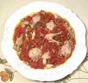

|
Frog Legs ProvençalFrance - Grenouilles a la Provençale | ||||
| Serves: Effort: Sched: DoAhead: |
2 main ** 45 min Yes |
Fresh, tasty and easy to make. There are many recipes under this name, but this one uses ingredients and simple methods typical of Provence. I think some recipes mistake "Provençale" for "country style". | |||
|
2-1/2 1 2 3 3 1/3 1/2 1/2 1/4 |
# c # T cl c T t t |
Frog Legs (1) Vermouth (2) Tomatoes ripe Parsley Garlic Olive Oil ExtV Sugar Salt Pepper |
Prep (15 min)
|